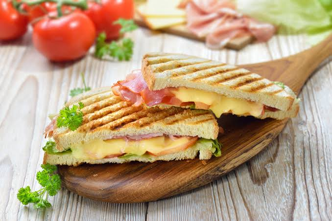

Bikini Sandwiches

How to make Bikini Sandwiches
Bikini sandwiches consist of buttered toasted bread topped with Manchego cheese and serrano ham. Each bite is warm, buttery, and layered with subtle tang and umami.
Ingredients
- 4 (1/2 inch thick) slices heaty white bread,
- 2 ounces thinly sliced serrano ham
- 4 ounces Manchego cheese, shredded
- 2 tablespoons salted butter, softened
Recipes
- Top 2 bread slices evenly with serrano ham, followed by a sprinkle of 1/2 cup Manchego on each. Place remaining 2 bread slices on top of Manchego. Spread butter evenly on both sides of sandwiches.
- Heat a large nonstick skillet over medium. Add sandwiches to skillet; lightly cover with aluminum foil, then place a large cast-iron skillet on top to compress. (Alternatively, use a heavy skillet weighted with 2 heavy cans.)
- Cook, flipping sandwiches once and adjusting heat as necessary, until bread is golden brown and toasted and cheese melts, 2 to 3 minutes per side.
- Transfer sandwiches to a cutting board. Cut the crusts off, then cut into triangles. Serve immediately.
Home